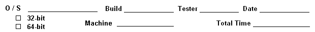

SharePoint Testing - ID Shield

FPS Files
- The following FPS files are used for subsequent test cases.
- Note that appropriate actions must be added to the desired FAM database.
- ID Shield
- General
- OCRAndRunRules.fps and ProduceRedactedImage.fps
should be added to ESFAMService.sdf for processing with
the FAM service.
- Database
- Create an Extract_IDS database.
- Add a Process action.
- Add a Redact action.
- Add a Verify action.
- Add a RedactNow action. This action will not be used
since the RedactNow FPS file will be exercised via RunFPSFile
with an /ignoreDB flag.
- OCRAndRunRules.fps
- Use the Process action.
- Supply TIFs and/or PDFs from the folder that will be defined
as the working folder. Files should normally be supplied from
sub-folders. Files should also normally be supplied that are
added or modified.
- Core: Execute rules - use Demo_IDShield rules or rules
appropriate for a specific customer.
- Core: Conditionally execute task(s)
- Define a condition to check for No sensitive
data.
- If the condition is met, Core: Set file action
status so that the ProduceRedactedImage action is
set to Pending. The insensitive image will now be
processed by ProduceRedactedImage.fps.
- If the condition is not met, Core: Set file action
status so that the Verify action is set to
Pending. The sensitive image will now be verified
by Verify.fps.
- Core: Create file to create a
SourceDocName.InVerificationQueue file. ID Shield for
SharePoint is looking for this file in order to update
processing status.
- Log details of an error to <SourceDocName>.uex.
- Execute a Core: Copy, move or delete file task to copy
<SourceDocName>.uex to
<SourceDocName>.failed.
ID Shield for SharePoint is looking for this file in order to update
processing status.
- ProduceRedactedImage.fps
- Use the Redact action.
- Redaction: Create redacted image - use
<SourceDocName>.redacted as the Image Output File Name.
ID Shield for SharePoint is looking for this file in order to update
processing status.
- Core: Create file to create a SourceDocName.Processed file. ID
Shield for SharePoint is looking for this file in order to update
processing status.
- Core: Copy, move or delete file to delete
<SourceDocName>.uss.
- Core: Copy, move or delete file to delete
<SourceDocName>.voa.
- Log details of an error to <SourceDocName>.uex.
- Execute a Core: Copy, move or delete file task to copy
<SourceDocName>.uex to
<SourceDocName>.failed.
ID Shield for SharePoint is looking for this file in order to update
processing status.
- Verify.fps
- Use the Verify action.
- Redaction: Verify sensitive data.
- Core: Set file action status so that the
ProduceRedactedImage action is set to Pending.
The verified image will now be processed
by ProduceRedactedImage.fps.
- RedactNow.fps
- Use the RedactNow action.
- Redaction: Verify sensitive data.
- Redaction: Create redacted image - use default settings.
Add Documents
- Create a new library for testing, if not already available.
- Click Add document.
- Confirm that a single document can be added.
- Confirm that multiple documents can be added via browse.
- Confirm that multiple documents can be added via
drag-and-drop.
Site Permissions
- Process Folder
- Confirm that a user must be a member of the ID Shield
Administrator group in order to use ID Shield - Process
Folder.
- [Integrations #274] Confirm that relevant exceptions
are logged in the UEX file.
- Redact Now
- Confirm that a user must be a member one or more of the
following groups in order to use Redact Now.
- Team Site Member
- ID Shield Administrator
- Confirm that members of just the Team Site Visitor
group cannot use Redact Now.
ID Shield User Interface
- In SharePoint, navigate to a document library for testing.
- Confirm that the ID Shield ribbon is available under Library
Tools.
- Confirm that the ID Shield ribbon includes buttons for Redact
now (disabled), Process folder, Remove settings,
Process selected, and Verify.
- Select a single document and confirm that only the following
items are enabled.
- Redact now
- Process selected
- Verify
- Select multiple documents and confirm that only the following
items are enabled.
- Click on the Process folder button and confirm that it
brings up the Process Current Folder dialog.
- Confirm that the user must be a member of the ID Shield
Administrators group to use the control.
- Confirm the presence of an Input file specification group
box.
- Confirm that it contains a read-only text box for Current
folder.
- Confirm that it contains a File extension specification
text box.
- Try to click OK and confirm that the file extension must be
specified.
- Confirm the presence of a Folder settings group box.
- Confirm that it contains checkboxes for
- Reprocess previously processed files
- Recursively process files from any sub folders
- Do not process existing files
- Confirm that it contains radio buttons for
- Process any files that are added
- Confirm that Do not process existing
files is enabled only when the radio button
is selected.
- Process any files where the field ...
- Confirm the field combobox and the value text
box are only enabled when the radio button is
selected.
- Confirm the field combobox has names of columns
that are text based, choice based or boolean.
- Copy Source
- Version
- IDS Status
- Title
- I will select files to process
- [FlexIntegrations #378] Reprocess Previously Processed Files
- Modify Folder settings to process any files that
are added plus processing any existing files.
- Confirm that all files matching the file
specification are set To Be Queued.
- Modify Folder settings to not process existing files.
- Confirm that all new files matching the
file specification are set To Be Queued.
- Confirm that existing files are not processed.
- Confirm the presence of an Output settings group box.
- Confirm that it contains radio buttons to:
- Use same filename in a parallel folder
- Confirm the presence of an associated
Prefixed/Suffixed dropdown list and text box.
- Use sub folder called
- with an associated text box.
- Use same folder but
- Confirm the presence of an associated
Prefix/Suffix dropdown list and text box.
- Use identical folder structure in document library
with internal name
- with an associated text box
- Confirm that the associated controls are enabled only when
the appropriate radio buttons are selected.
- Confirm that a valid output location is required to be
specified.
- Confirm that after processing settings are configured, the
document library includes an IDS Status column.
- Click the Remove settings button.
- Confirm that it brings up a dialog to remove the settings on the
current folder. NOTE: this dialog seems likely to be changed.
- Select a single document and click the Redact now
button.
- [Integrations #368] Confirm that a message pops up informing
you that the client is not running.
ID Shield Processing Tests
- Redact Now
- To install the client, run .\IDShieldForSPClient\Install
Extract IDShield SharePoint Client.exe.
- To start the Client, run ID Shield For SharePoint Client
from the ID Shield For SharePoint folder in the Start Menu.
- Confirm that an ID Shield icon appears in your system
tray.
- Right-click the system tray icon. Confirm there are two
options:
- About... - brings up an About box
- Exit - causes the client to exit
- In the Central Administration console, configure the client
to use an appropriate FPS file (one with verification and create
redacted image tasks).
- Verify.fps as created in the FPS Files
section of this checklist contains the appropriate tasks.
- NOTE: the client currently looks for output
files in the form .redacted.ext, not .ext.redacted,
like the regular SP interface.
- Add a new document to the library.
- With the client running, select the new document and click
the Redact now button.
- Confirm that the selected document is opened for
verification.
- [JIRA #8079] Confirm that the verification
window always appears in front.
- Confirm that inital IDS Status is Not Processed.
- Confirm that IDS Status remains Not Processed
during verification.
- Confirm that the verification interface works as
expected.
- Confirm that the local copy of the document was saved
in the user's local temp directory.
- Confirm that no sensitive data is highlighted in the
image if Core: Execute rules is not part of
RedactNow.fps.
- Confirm that type information must be provided if that
requirement is part of the Redaction: Verify sensitive
data task.
- Save the document.
- Confirm that the Save Redacted File dialog comes
up.
- Confirm that the dialog provides the path to the
original source image in SharePoint in a read-only Source
Image text box.
- Confirm that the dialog provides a text box for the
filename of the output file.
- Confirm that the dialog provides a folder browser
dialog to select which document library/folder/local disk
to save to.
- Confirm that each of those options works as expected.
- Confirm that ID Shield-related columns are not
added to the SP site after using the client to push a
redacted image.
- Confirm that a Redacted file link is provided in
the IDS Reference column.
- Confirm that when an output file is saved into the original
folder, an Original file link is provided in the
IDS Reference column.
- Confirm that the IDS Status column says
Redacted.
- Processing With Remote Client
- Set up a client machine with ID Shield installed and licensed,
but not SharePoint.
- Copy Install Extract IDShield SharePoint Client.exe to
the client machine. Run the EXE.
- Do whatever magic is necessary to set up an appropriate trust
relationship between the SP server and the client.
- On the client, navigate the SP site, select an appropriate
document, and click the Redact now button.
- Confirm that the appropriate FPS file is launched and the
SharePoint client behaves as expected.
- [Integrations #265] Error Handling
- Prepare some documents for processing via Redact
Now.
- Modify the Central Administration settings to
remove the Location for ID Shield for SharePoint Client
FPS file path.
- Process a document with Redact Now.
- Confirm that a Path to ID Shield for SP Client FPS
file is not set error is displayed.
- [Integrations #269, #271, #298] ID Shield for SP On
Remote Machine
- Install and exercise ID Shield for SharePoint
on a test machine.
- Confirm that the Location for ID Shield for SharePoint
Client FPS file setting uses a UNC path.
- Install and license ID Shield on a separate
test machine.
- Install the IDShieldForSharePointClient on the
second test machine. Run the EXE.
- Confirm that a document can be processed from the
second test machine.
- Verification
- [Integrations #387] File Does Not Exist
- Process some files.
- Confirm that at least one document is Queued For
Verification.
- Delete a file that is ready for verification.
- Attempt to verify the file.
- Confirm that a meaningful error message is
displayed.
- Confirm that a meaningful error is logged.
- Confirm that the file is marked Failed.
- [JIRA #8079] Verification Window In Front
- Process some files.
- Confirm that at least one document is Queued For
Verification.
- Verify the file.
- Confirm that the verification window always
appears in front.
- Miscellaneous
- [Integrations #301, #302] File Columns
- Process some files.
- Confirm that for the original file locations in the library,
a link is provided in the Name column to view the
original image.
- Confirm that for the original file locations in the library,
a link is provided in the IDS Reference column to
view the redacted image.
- Confirm that for the output file locations in the library,
a link is provided in the Name column to view the
redacted image.
- Confirm that for the original file locations in the library,
a link is provided in the IDS Reference column to
view the original image.
- [Integrations #313] Libraries With Whitespace
- Create a new library.
- Add some documents to the library.
- Edit settings for the new library and add some
whitespace inside the name.
- Confirm that the new name is accepted.
- Process a document with Redact Now.
- Confirm that the redacted document is saved
correctly.
- [Integrations #365] Checked Out Source Library
- Create a new library that requires documents to be
checked out.
- Add some files.
- Process the files.
- Confirm that files are processed and that status columns
are updated.
- [Integrations #366] Checked Out Destination Library
- Create a new library (A) that requires documents to be
checked out.
- Process files in a different library (B) with output
settings to provide the results to library (A).
- Confirm that output documents are properly written to
library (A).
- Input File Specification
- Confirm that the Current folder: setting is the name of
the Document Library.
- Confirm that the following File extension specification
test cases each work properly.
- *.tif
- *.pdf
- [Integrations #372] *.tif;*.pdf
- Folder Settings
- Process Added Files
- Select the I will select files to process
option.
- Add some files to the library.
- Wait through one or two timer job iterations and
confirm that the files are not automatically
processed
- Select the Process any files that are added
option.
- Select the Do not process existing files checkbox.
- Add one or more documents to the library.
- Confirm that each recently added file is successfully
processed.
- Confirm that the previous added files are not processed.
- Deselect the Do not process existing files
checkbox.
- Add one or more documents to the library.
- Confirm that each recently added file is successfully
processed.
- Confirm that the original files are also processed.
- I Will Select Files
- Select the I will select files to process
option.
- Add some files to the library.
- Confirm that no files are automatically processed.
- Select one or more files and click Process
Selected.
- Confirm that the selected files are processed.
- Process Any Files
- Select the I will select files to process
option. This ensures that no files will be processed until
the user/tester is ready.
- Select the Library tab.
- Click the Create Column button.
- Provide a Column name such as ABC and retain
the default Single line of text setting. Retain
the other default settings.
- Add some documents to the library.
- Select each new document one at time.
- Select the Documents tab.
- Click the Edit Properties button.
- Add some text to the ABC field that
was added above. Note that subsequent testing
needs to be able to select one or more (but not all)
of the new documents based on the ABC setting.
- Save the Properties.
-
- Select the Process any files where the field...
option.
- Select the ABC column.
- Update the edit box so that it contains text used for
one or more files' Document Settings above.
- Save the settings.
- Select all of the recently added documents.
- Click the Process Selected button.
- Confirm that each file with the appropriate ABC
setting is successfully processed.
- Confirm that each file with a different ABC
setting is not processed.
- Add additional columns of the specified type, update
document settings as needed, and confirm that only the
desired documents are processed.
- Multiple lines of text
- Number
- Yes/No (check box)
- Any above with the column as Required
- Reprocess
- Select the Reprocess previously processed files
option.
- Select a file that was previously processed but not
verified.
- Confirm that IDS Status started with
Queued For Verification.
- Process the file.
- Verify the file.
- Confirm that IDS Status ended with
Redacted.
- Confirm that the Modified timestamp
is updated.
- Select a file that was previously processed and
verified.
- Confirm that IDS Status started with
Redacted.
- Process the file.
- Verify the file.
- Confirm that IDS Status ended with
Redacted.
- Confirm that the Modified timestamp
is updated.
- Output Settings
- Prepare some documents for processing via Process
Selected.
- Same Filename
- Select the Use same filename... option.
- Add Prefixed text to the edit box.
- Process and verify a file.
- Confirm that the output file is located in a
parallel folder and has the specified text prefixed to
the original folder name. The filename should be unchanged.
- Confirm that the link in the Name
column opens the redacted image.
- Confirm that the Original file
link in the IDS_Reference column opens
the unredacted image.
- Add Suffixed text to the edit box.
- Process and verify a file.
- Confirm that the output file is located in a
parallel folder and has the specified text suffixed to
the original folder name. The filename should be unchanged.
- Confirm that the link in the Name
column opens the redacted image.
- Confirm that the Original file
link in the IDS_Reference column opens
the unredacted image.
- Subfolder
- Select the Use subfolder... option.
- Add the subfolder name.
- Process and verify a file.
- Confirm that the output file is located in the
specified subfolder with the original filename.
- Confirm that the link in the Name
column opens the redacted image.
- Confirm that the Original file
link in the IDS_Reference column opens
the unredacted image.
- Same Folder
- Select the Use same folder... option.
- Add Prefixed text to the edit box.
- Process and verify a file.
- Confirm that the output file is located in the
same folder and has the specified text prefixed to
the original filename.
- Confirm that the link in the Name
column opens the redacted image.
- Confirm that the Original file
link in the IDS_Reference column opens
the unredacted image.
- Add Suffixed text to the edit box.
- Process and verify a file.
- Confirm that the output file is located in the
same folder and has the specified text suffixed to
the original filename.
- Confirm that the link in the Name
column opens the redacted image.
- Confirm that the Original file
link in the IDS_Reference column opens
the unredacted image.
- Document Library
- Select the Use identical folder structure...
option.
- Specify the name of a document library.
- Process and verify a file.
- Confirm that the output file is located in the
specified document library.
- Confirm that the link in the Name
column opens the redacted image.
- Confirm that the Original file
link in the IDS_Reference column opens
the unredacted image.
- ID Shield for SharePoint
- Confirm that when you export files from SP for processing,
the local filenames are incomprehensible GUIDs.
- Confirm that an IDS Status column correctly displays the
status of all files in folders to be processed:
- Not Processed
- To Be Queued
- Queued For Processing
- Queued for Verification
- Redacted
- No Redactions
- Processing Failed
- Confirm that the status column cannot be manually
modified.
- Confirm that a file exporter timer job exports all files with
the To Be Queued status to the appropriate location.
- Confirm that the folder sweeper appropriately modifies the
status for any file for which a .inverificationqueue file
exists.
- Confirm that the folder sweeper cleans up any file for which a
.processed file exists.
- Confirm that when files are cleaned up, any .redacted files are
pushed back into SP in the appropriate location.
- Confirm that ID Shield columns are added to SP with links from
original to redacted documents and vice-versa.
- Confirm that if the folder sweeper finds a .failed file, an
exception is logged notifying the user that the associated file
failed to process.
- Confirm that if both a .processed and .failed file exist, the
file is considered failed.
- Confirm that everything works on both the main SP site and also
on any subsites.
- Confirm that recursive folder watching works as expected.
- [Integrations #173] Confirm that processing images recursively
where output goes to a prefixed parallel folder works properly without
Object reference not set to an instance of an object exceptions
being logged.
- [Integrations #188] Confirm that folder watching with the main
site works correctly.
Miscellaneous Tests
- [Integrations #149, #168, #185] Exception Handling
- Confirm that exceptions are logged to the exception service.
- Confirm that exceptions are always logged to the SharePoint
log.
- Confirm that ELI codes and text are included when adding
exceptions to the SharePoint log.
- [Integrations #254] Confirm that exceptions are also
added to the UEX log.
- [Integrations #163, #283] Uninstall
- Confirm that ID Shield for SharePoint settings are
completely configured.
- Uninstall ID Shield for SharePoint.
- Reinstall ID Shield for SharePoint.
- Confirm that ID Shield for SharePoint settings are
completely cleared.
- [Integrations #172] Open With Explorer
- Click the Open with Explorer button in the Library
ribbon.
- Use the associated Explorer window to add a TIF image
to SharePoint.
- Confirm that the image is correctly added to SharePoint.
- Confirm that the image is correctly added to the ID Shield
watch folder.
- [Integrations #175] Multiple SharePoint Sites
- Confirm that more than one site can have an active ID
Shield feature.
- [Integrations #177] Uploading Multiple Documents
- Confirm that multiple documents can be uploaded to SharePoint
via the Upload Multiple Documents button in the Documents
ribbon.
- Confirm that multiple documents can be uploaded by dropping
files into SharePoint via an Explorer window.
- [Integrations #181] Security Exceptions With Root-level Output
Folder
- Create a new document library and activate the ID Shield
feature.
- Open the watch folder dialog and configure the output settings
to use a parallel folder or a custom location that is also at the
root level.
- Upload a file to the library.
- Add a .redacted and a .processed file.
- Confirm that the files are properly cleaned up and exported to
the output folder.
- Confirm that no security exceptions are logged.
- [Integrations #345 Add button to ribbon to set all selected files
to be queued
- Setup Process Folder settings for the folder you are working in,
for this test set to queue by a field with a value it will never
contain.
- Confirm Process Selected button is disabled when no files
are selected.
- Add files to folder.
- Select one or more files.
- Click the Process Selected button on the ribbon.
- IDS Status column should change to To Be Queued.
- [FlexIntegrations #349, #357, #358] ID Shield for SharePoint
Client
- Install the client.
- Confirm that a non-admin user can use the client.
- Confirm that the icon for the Verify button matches
the toolbar button for ID Shield for Laserfiche.
- Confirm that the button is only enabled when:
- An FPS file is set in ID Shield Configuration.
- A single document is checked.
- The document status is Queued for Verification.
- [Integrations #350] Add ability to queue files based on the value
of a field for a document.
- Create a Yes/No column named Redact with a default value of "No"
(this can be done from Library Settings).
- Setup Process folder settings to watch for field "Redact"
with value "Yes".
- Add a single document
- Save without changing any values on the dialog
to edit field values.
- IDS Status should be Not
Processed.
- Repeat adding a file and changing the Redact field
to checked.
- IDS Status should be To Be
Queued.
- Add multiple documents
- All should have IDS Status set to Not
Processed.
- Select a file that has Redact column set to No.
- Edit the properties and set Redact to checked.
- IDS Status should be To Be
Queued.
- Repeat with the value for the field set to True
- Repeat with the value for the field set to 1
- Repeat with the value for the field set to No
- Repeat with the value for the field set to False
- Repeat with the value for the field set to 0
- Repeat with a value that is not one of the previous tested,
all results should be Not Processed
- Repeat with the Recusively process files from any sub folders,
adding files to the subfolders
- Repeat testing with files in different processed states and then set
the Reprocess previously processed files.
- When the settings are saved all files that meet the field
condition and don't have anything in the IDS Reference
column should be set to To Be Queued.
- Test the Process any files that are added option.
- Add a single file.
- Wait at least 30 seconds before clicking save on the
Field Value dialog.
- There should not be an unhandled exception.
- Confirm the file was set to To Be Queued.
- Add multiple files.
- Confirm all the files are set to To Be Queued.
- [FlexIntegrations #363, #367, #386] Processing Checked Out Files
- Prepare a library with several documents.
- Check out one file.
- Select several files inclusing the checked out file.
- Confirm that a meaningful message is presented about not
processing the checked out file.
- Confirm that all non-checked out selected files are successfully
processed.
- Undo the check-out and confirm that the file processes
successfully.
- [FlexIntegrations #368, #374] Confirm that a meaningful error
message is presented to a user trying to Redact Now when ID
Shield for SharePoint Client is not running.
- [FlexIntegrations #369, #381] ID Shield for SharePoint
- Confirm that all captions use SharePoint instead of
Sharepoint.
- Caption for the installation pages
- Name of the installation EXE
- Name of the folder shown in the Start menu
- Name of the shortcut inside the Start menu folder
- Confirm that Value text box is disabled when the
Process any files where the field option is not selected.
- [FlexIntegrations #371] Reprocessing A Document
- Process a file with redactions and confirm the the IDS
Reference column contains a link to the redacted file.
- Reprocess the file such that no redactions are found.
- Confirm that the IDS Reference column is empty.
- [FlexIntegrations #373] Confirm that the ability to queue a
document based on the value of a field works if document Checkout
is required.
- [FlexIntegrations #375] Verification Access Denied
- Prepare Library A so that a user has contributor
rights (can add and read files).
- Prepare Library B so that the full user of
Library A has no rights.
- As an admin user, setup ID Shield to process both libraries.
- Confirm that the limited user can successfully verify
documents from Library A.
- [FlexIntegrations #377] Confirm that ID Shield for SharePoint
Client can be installed on a remote machine and successfully connect
to a SharePoint server.
- [FlexIntegrations #378] Reprocess Previously Processed Files
- Modify Folder settings to process any files that are
added plus processing any existing files.
- Confirm that all files matching the file
specification are set To Be Queued.
- Modify Folder settings to not process existing files.
- Confirm that all new files matching the file
specification are set To Be Queued.
- Confirm that existing files are not processed.
- [FlexIntegrations #379, #380] SharePoint Permissions
- Confirm presence of an Extract ID Shield Verifiers group.
- Confirm that only members of this group are allowed to use
the Verify button.
- Confirm that only members of this group are allowed to use
the Redact Now button.
- Confirm presence of an Extract ID Shield Document
Submitters group.
- Confirm that only members of this group are allowed to use
the Process Selected button.
- [FlexIntegrations #384] Confirm that Process Selected
does not set files to be queued if they are already processing or queued
for verification.
- [FlexIntegrations #388] Confirm that the Process Selected
button is disabled if a folder is selected.
- [FlexIntegrations #389] Process Selected
- Create a new library for ID Shield.
- Add some documents.
- Select one document.
- Click the Process Selected button.
- Confirm that a meaningful error message about missing
settings is presented.
- [FlexIntegrations #390] Confirm that the copyright date for
ID Shield for SharePoint is current.
- [FlexIntegrations #391] Reprocess Previously Processed Files
- Process some files.
- Confirm that one or more files have Queued For Processing
or Queued For Verification status.
- Change settings to include Reprocess previously processed
files.
- Confirm that the files that are in the above Queued...
statuses are not reprocessed.
- [FlexIntegrations #393] Confirm that the SharePoint Client
install works properly.